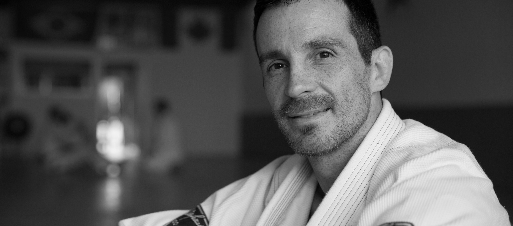

4th Degree Black Belt
Marc brings a lifetime of dedication to Gracie Jiu-Jitsu, combining technical precision, real-world application, and a deep respect for the sport’s fundamentals. His instruction emphasizes safe progression, confidence, and disciplined training for every level.